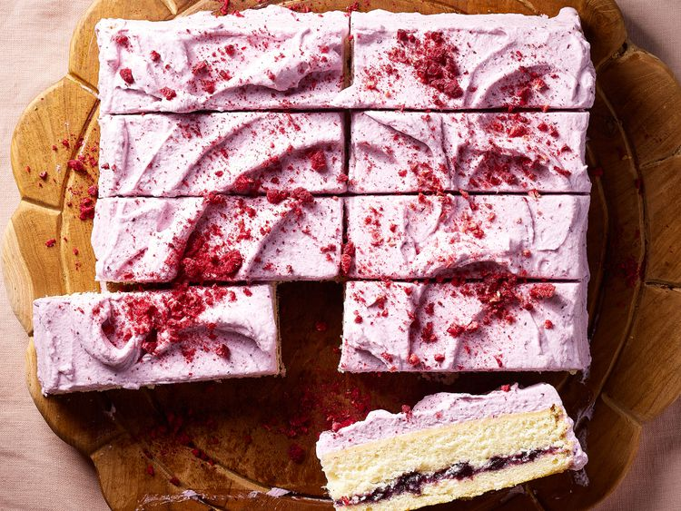

Berries-and-Cream Bars

Description
Here is the perfect snack cake for summer. Egg whites are whisked for a lighter crumb, then flavored with a smidge of almond extract for a hint of nuttiness. These fluffy snack cakes hold a layer of jam and are coated with a sweet berry cream and freeze-dried fruit.
Ingredients
- 2 cups all-purpose flour
- 3 tablespoons vegetable oil
- 3 large egg whites
- 1 cup whipping cream
- 1/4 cup marshmallow creme
- 1/2 cup freeze-dried strawberries or raspberries for garnish
Steps To Prepare
- Preheat the oven to 350 degrees F (175 degrees C) and position rack in center. Lightly grease bottom of a 9-inch square cake pan. Line bottom with parchment paper. Grease and lightly flour parchment and sides of pan
- Whisk together flour, baking powder, and salt in a medium bowl.
- the bowl of a stand mixer fitted with a paddle attachment, mix butter and oil at medium speed until well combined, about 1 minute. Mix in sugar at medium-high speed until light and fluffy, 4 to 5 minutes. Mix in egg whites in 2 or 3 additions at medium speed until well combined, scraping bowl well after each addition. Mix in 1 teaspoon vanilla and the almond extract.
- Mix in about 1/3 of flour mixture at low speed. Mix in 1/3 cup milk; scrape bowl well. Repeat, alternating flour mixture and milk, until fully incorporated and batter is smooth
- Spread batter in an even layer in prepared pan. Bake until a toothpick inserted into center comes out clean or with a few moist crumbs, about 30 minutes
- Let cool in pan 10 minutes, then run an offset spatula or a knife around edge of cake and invert onto a wire rack. Remove parchment and let cool completely
- Using a large serrated knife, halve cake horizontally to make two layers. Transfer one layer, cut side up, to a platter. Top with 1/2 cup jam, spreading evenly. Top with second cake layer, cut side down
- Meanwhile, for berry cream, purée remaining 2/3 cup jam in a blender or mini food processor until very smooth
- In the bowl of a stand mixer fitted with a whisk attachment, beat cream at medium speed until it begins to thicken, about 1 minute. Mix in marshmallow creme at medium-high speed until soft peaks form. Mix in puréed jam and remaining 1 teaspoon vanilla at low speed until well combined. (If needed, fold whipped cream by hand to more evenly incorporate jam.) Frost top and sides of cake with berry cream.